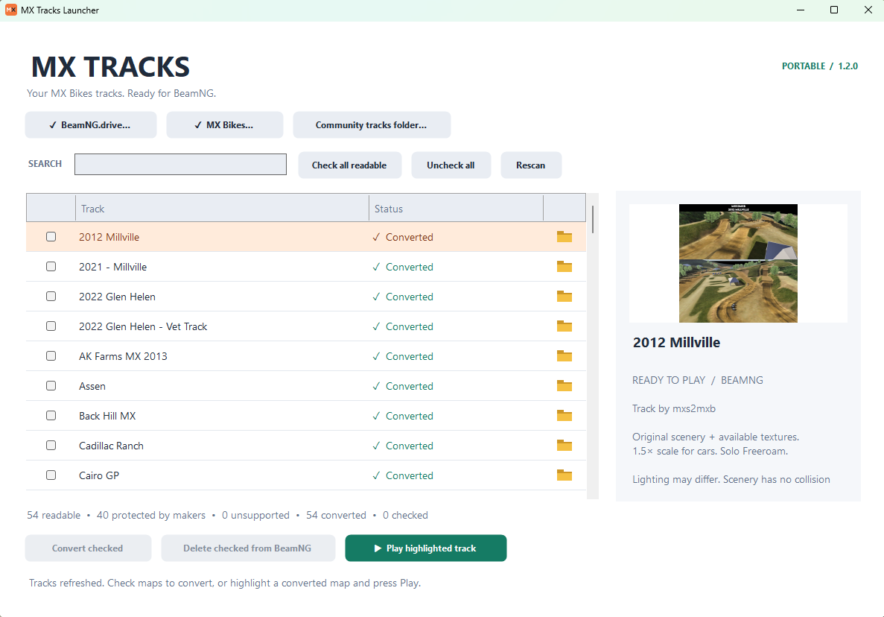

MX Tracks Launcher is a free, portable Windows app that turns your MX Bikes tracks into BeamNG.drive maps, so you can drive any BeamNG car or truck over real motocross jumps, whoops and berms.

Lists every MX Bikes track on your PC with a preview picture. Tick the ones you want and press Convert. Converted tracks are listed first.
Brings over each track's own layout, jumps, dirt and grass textures, trees, fences and buildings from your own MX Bikes copy.
Highlight a converted track and press Play. BeamNG opens straight onto it.
The folder icon shows where each track lives, and Delete removes a converted track from BeamNG without touching the original.
Tracks their makers encrypted are greyed out and marked Protected by maker. Scenery has no collision yet, and lighting differs from MX Bikes.
One small ZIP with no game files inside. Friends just need both games.
MXTracksLauncher.exe. Keep the beamng folder next to it.Steam libraries on any drive and standalone (non-Steam) MX Bikes installs are found automatically.
Yes. MX Tracks Launcher converts the MX Bikes tracks installed on your PC into BeamNG.drive maps, including their layout, jumps, textures and scenery. Maps are scaled 1.5× to suit cars and load in Freeroam.
No. The download contains no game content. Each player needs their own installed BeamNG.drive and MX Bikes, and the converter reads their own files.
"Protected by maker" tracks were encrypted by their creators so only MX Bikes can open them. The launcher respects that and never unlocks them. "Cannot convert" means a layout the launcher can't read yet.
Not yet. Scenery is visual only and has no collision. The terrain itself is fully drivable and collidable.
Yes. Converting a track creates a mod in your BeamNG mods folder. Take the map files from that mod and add them to your BeamMP server.
Please don't. Share the small launcher zip instead, so each friend converts the tracks from their own copy.